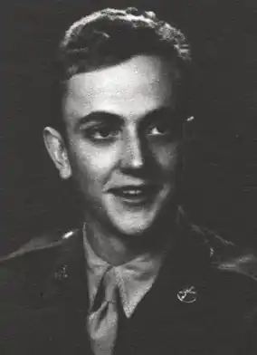
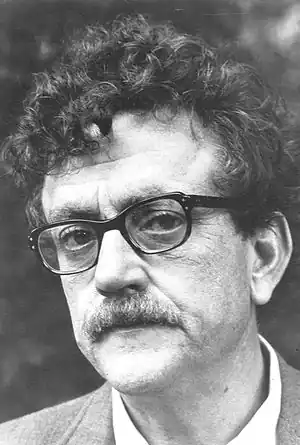

ВОННЕҐУТ, Курт (Vonnegut, Kurt — нар. 11.11.1922, Індіанаполіс, штат Індіана) — американський прозаїк.Народився в сім'ї архітектора німецького походження. Батько хотів, щоб син став науковцем; майбутній письменник вивчав біохімію в Корнуельському університеті. Навчання перервала Друга світова війна, він був призваний на військову службу, служив у піхоті, брав активну участь у бойових діях на Західному фронті. У грудні 1944 р. Воннеґут потрапив у фашистський полон, і його відправили у дрезденську в'язницю. Там він пережив бомбардування Дрездена союзною авіацією у лютому 1945 року — його врятувало те, що він зі своїми товаришами сховався у підвалах бойні.
У травні 1945 р. Воннеґут повернувся на батьківщину, займався два роки антропологією в університеті Чикаго, одночасно працюючи поліцейським репортером, потім переїхав у Скенектаді і влаштувався у відділ громадських зв'язків на фірмі "Дженерал моторе". Знання в галузі хімії, математики, природничих наук, безумовно, спричинили особливу зацікавленість Воннеґута проблемами технології, наукового прогресу та його наслідків, що відобразилось у його творчості.
Воннеґут дебютував романом "Механічне піаніно" ("Player Piano", 1952; рос. мовою вийшов під назвою "Утопия 14"). У ньому в дусі фантастики і гротеску Воннеґут іронізує над негативними наслідками технічного прогресу, масовою автоматизацією, зображуючи суспільство майбутнього, кероване вченою елітою з допомогою величезного комп'ютера. У наступному романі "Сирени Титану" ("The Sirens of Titan", 1959), який пародіює наукову фантастику, йдеться про напад машиноподібних марсіан на Землю, що змусило землян згуртуватися і забути колишні конфлікти. Уже перші твори висунули Воннеґута у ряд провідних письменників США повоєнного часу. Зростання його майстерності помітне у романі "Колиска для кішки" ("Cat's Cradle", 1963). У центрі твору, насиченого калейдоскопом химерно-фантастичних подій, оповідач — журналіст Джоан, який відправляється в місто Іліум, щоб написати книгу про видатного вченого-іліумця, винахідника атомної бомби Фелікса Хоніккера, а також про кристал, названий "льодом дев'ять", здатним заморожувати все, з чим він стикається. Наукова істина, сповідувана Хоніккером, по суті, аморальна й антигуманна. В сатиричному плані змальований у романі острів Сан Лоренцо (що викликає прозорі асоціації з Гаїті) та його диктатор — тато Монцано. На Сан Лоренцо вивищується самозваний духовний лідер Боконон, який встановлює для остров'ян нову релігію, названу боконізмом. Це — заспокійлива, солодка брехня, покликана відвернути людей від роздумів про їхню гірку долю. Втім, у боконізмі, який так і не рятує острів Сан Лоренцо від деградації, є й позитивний аспект, оскільки в ньому стверджується цінність кожної окремої людської особистості у світі бездушного практицизму та голого техніцизму. Врешті-решт через випадковість (застосування "льоду дев'ять") острів гине майже зі всіма його жителями; рятуються лише журналіст, Боконон та ще декілька людей. Моральні проблеми суспільства в епоху НТР, небезпека дегуманізації та роботизації людських стосунків постійно хвилюють Воннеґута, складають внутрішній пафос його творів. У романі "Дай вам, Боже, здоров'я, містере Розуотере, або Не кидайте бісер перед свиньми" ("God Bless You, Mr. Rosewater; or, Pearls before Swines", 1965) у центрі образи багатія та "дивака" Еліота Розуотера, "єдиного американця, котрий відчув, що таке Друга світова війна". Він очолив "фонд Розуотера", зосередивши в ньому величезне багатство, але скерував його не на прибуток, а на благо ближніх. У своїй філантропічній діяльності (Еліот, до речі, єдиний співробітник власного фонду) видається для навколишніх "психом", "ненормальним". Його доброта уявляється людям, заклопотаним лише егоїстичними інтересами, серйозним відхиленням. Етична ж позиція письменника виражена короткою формулою: "Потрібно бути добрим, чорт би його взяв". У романі діє письменник-фантаст Кілґор Траут, постать до певної міри автобіографічна, "наскрізний" персонаж ряду творів В. Його фантазії створили книгу, в якій зображується суспільство з настільки високим рівнем механізації, що людина стає вже непотрібною... Воннеґут зажив слави живого класика після появи всесвітньо відомого роману "Бойня номер п'ять, або Хрестовий похід дітей" (" Slaughterhouse Five; or, The Children's Crusade", 1969). Одразу ж після виходу твір був перекладений майже півтора десятком мов. У ньому дуже відчутні автобіографічні мотиви, зокрема, дався взнаки гіркий воєнний досвід письменника. Головний герой — Біллі Пілігрим, недоладний, дещо дивакуватий, наївний, відкриває в собі хист переноситися в часі та просторі: він мандрує то в епоху війни 1944—1945 pp., то в повоєнну Америку, з допомогою літаючих тарілок прибуває на планету Тральфамадор. У романі створюється не лише химерне переплетення часових планів, підпорядковане, проте, своїй внутрішній логіці, а й різні виміри, різні шкали цінностей: земна та планетарна. Це дає можливість наситити роман глибоким соціальним і філософським змістом, перетворити його у пристрасний виступ проти війни та мілітаризму. Вражають пронизані живими, невигаданими деталями сторінки, які стосуються воєнних епізодів. Біллі Пілігрим, полковий капелан, разом з товаришами потрапив в оточення, а згодом його взяли в полон під час німецького наступу в Арденах у грудні 1944 р. Спочатку військовополонених американців доправили в табір, де серед маси російських в'язнів, приречених на знищення, зберігся на вельми привілейованому становищі барак для англійських офіцерів. Звідси американців переводять у Дрезден і утримують їх на вже не діючій міській бойні номер п'ять. Там і захоплює їх страшне бомбардування союзної авіації 13 лютого 1945 p., яке перетворило місто, позбавлене стратегічних об'єктів, у палаюче багаття. У Дрездені загинуло більше жителів, аніж під час атомного бомбардування Хіросіми. Американці, серед котрих перебував і Біллі Пілігрим, перечекали бомбардування у сховищі, а коли вийшли з нього, то побачили будинки і вулиці, перетворені в обвуглену місячну поверхню, поцятковану кратерами та ровами. До самого кінця війни Пілігрим і його товариші розкопували руїни і витягували трупи. Але астрономічні цифри мертвих та апокаліптичні картини руйнувань не можуть заступити від письменника трагічної долі окремої людини. Укрупнена картина загибелі Дрездена підкреслюється епізодом смерті Едґара Дарбі, військовополоненого, колишнього шкільного вчителя, який читав курс "Сучасні проблеми західної цивілізації", людини гуманної, доброї, розстріляного фашистами начебто за мародерство (у нього в руках був чайник) перед самісіньким закінченням війни. Після повернення на батьківщину Біллі Пілігрим спочатку перебуває в госпіталі, де він підліковується від нервового потрясіння, а згодом замешкує в рідному місті Іліумі (воно зустрічається в ряді романів Воннеґута), одружується з некрасивою товстулею Валенсією, дочкою мільйонера, здобуває фах оптометриста (спеціаліста з окулярів), багатіє. У нього дім, машина, він — шанований член суспільства; є дочка і син Роберт, шалапут, який з часом стає офіцером, "зеленим беретом", учасником іншої війни, в'єтнамської. Спочатку Біллі Пілігрим, здавалося, забув про минуле, але потім, особливо після отримання черепної травми під час авіакатастрофи, пам'ять про дрезденську трагедію починає мучити його, він намагається розповісти про це співвітчизникам, розбити стіну байдужості, а за це його вважають несповна розуму. Серед його небагатьох друзів — уже згадуваний дивакуватий письменник-фантаст Кілґор Траут. В "американській" частині роману — чимало критичних зауважень щодо бездушного техніцизму, расизму, засилля порнографії і т. д. Викликає осуд байдужість співвітчизників до страждань ближніх, а трапляються й такі, хто виправдовує жорстокість (як це робить відставний військовий, а пізніше — професор Ремфорд, котрий пише історію американських ВПС). Не викликає захоплення автора і товариство в Трафальмадорі, ця технократична утопія всезагального добросердя, в основі якої — відсутність життєвих колізій і внутрішній спокій жителів цієї планети. Вони поміщають Біллі Пілігрима в зоопарк і розглядають його як якусь комаху чи тварину. У цих романах склалася своєрідна, химерні манера Воннеґута, його "телеграфно-шизофренічний", "сюрреалістичний" або, як його називають деякі критики, "воннеґугівський" стиль. У ньому поєднуються гостра сюжетність з фантастикою, гротеском, почасти бурлеском та ексцентріадою, а нестримний політ уяви "співіснує" зі злою іронією та відвертою сатирою. У наступних романах Воннеґута, таких, як "Сніданок для чемпіонів, або Прощавай, чорний понеділку" ("Breakfast of Champions; or, Goodbye Blue Monday", 1973), "Балаган, або Кінець самотності" ("Slapsticke; or, Lonesome No More", 1976), "Тюремна пташка" ("Jailbird", 1979), за жартівливим тоном і парадоксальними ситуаціями відчувається заклопотаність художника долею особистості в сучасному урбанізованому і дегуманізованому суспільстві. Небезпека гонки озброєнь — одна з центральних тем роману "Меткий Дік" ("Deadeye Dick", 1982): вибух нейтронної бомби знищив американське місто зі 100-тисячним населенням. Щоправда, дехто схильний виправдовувати таку "чисту зброю", оскільки вона знищує все живе, зате залишає неушкодженими "будови, будинки, машини і т. д. У романі "Галапагос" ("Galapagos", 1985) міститься попередження щодо однобокого розвитку цивілізації, коли моральні критерії явно відстають від накопичених знань. У ньому змальований якийсь архіпелаг, на якому збереглася певна община істот, наївних і простакуватих, майже позбавлених людських якостей. Друга половина 80-х pp. для Воннеґута була ознаменована виходом таких його романів, як "Мама Ніч" (1986), "Синя борода" ("Bluebeard", 1987), "Фокус-покус" ("Hocus Pocus", 1990). Однією із найпомітніших подій в американській літературі кінця XX ст. став вихід друком його роману "Часотрус" ("Timequake", 1998). "Часотрус" — твір, який Воннеґут назвав своїм "романом-мемуаром", став, за словами письменника, його останньою роботою в жанрі прози, своєрідним підсумком творчої діяльності.